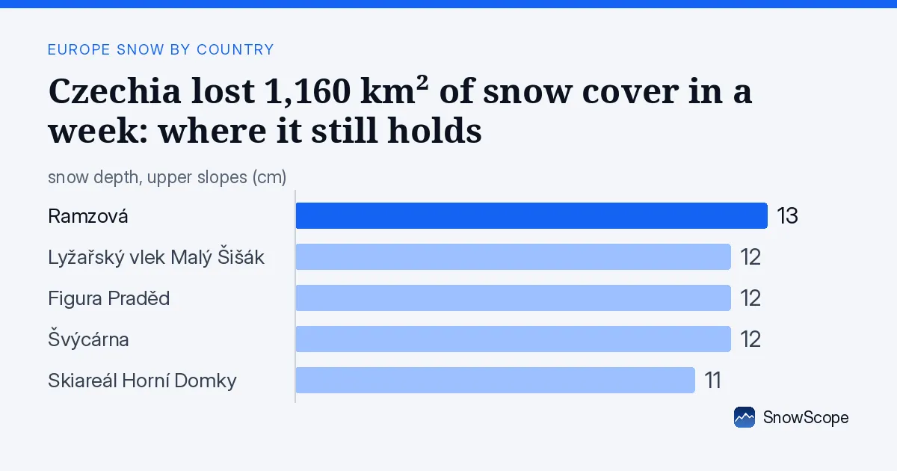

Czechia lost 1,160 km² of snow cover in a week: where it still holds
Seven days ago about 1,780 km² was white in Czechia; today it is 620 km², 1,160 km² less.
See the live snow forecast for Ramzová in the SnowScope appSnow depth, powder alerts and the 3D map, free.
What melted this week
The losses are at the bottom of the slopes. Higher up the snow is settling rather than going, so the upper lifts are the safe bet.
Snow covers roughly 620 km² in Czechia on 21 November, up 180 km² on yesterday. In other words, 2 % of the mapped high ground is white.
| Day | White area | Most new snow in 3 days | Deepest resort |
|---|---|---|---|
| Monday 16 November | 720 km² | 0 cm | Bílá |
| Tuesday 17 November | 230 km² | 2 cm | Ramzová |
| Wednesday 18 November | 60 km² | 2 cm | Figura Praděd |
| Thursday 19 November | 50 km² | 1 cm | Lyžařský vlek Malý Šišák |
| Friday 20 November | 660 km² | 2 cm | Skiareál Horní Domky |
| Saturday 21 November | 620 km² | 3 cm | Ramzová |

Seven days of snow cover
Snow cover in Czechia over the last days: 16 November 720 km²; 17 November 230 km²; 18 November 60 km²; 19 November 50 km²; 20 November 660 km²; 21 November 620 km².
The deepest resort changed hands 5 times this week.
Today's snow cover
Think 1,200 m and higher for a white landscape. Seven days ago the figure was 1,780 km², 1,160 km² more than now.
Low, middle and high ground
Snow depth on the ground, height by height: between 500 and 1,000 m, under 1 cm on average, 1 % covered; between 1,000 and 1,500 m, 1 cm on average, 41 % covered.
Best resorts right now
The deepest snow of the country's resorts is at Ramzová: 13 cm.
Then come Lyžařský vlek Malý Šišák (12 cm), Figura Praděd (12 cm), Švýcárna (12 cm) and Skiareál Horní Domky (11 cm).
At Ramzová: 7 cm of fresh snow over three days, 4 cm more expected by Tuesday 24 November.
At Lyžařský vlek Malý Šišák: 9 cm of fresh snow over three days, 6 cm more expected by Tuesday 24 November.
36 of the 171 resorts we follow in Czechia have snow on their upper slopes.
The rest of the shortlist: Figura Praděd: 12 cm on top, 8 cm in three days, 4 cm expected; Švýcárna: 12 cm on top, 8 cm in three days, 4 cm expected; Skiareál Horní Domky: 11 cm on top, 12 cm in three days, 6 cm expected.
What is coming
Snow is in the forecast: up to 7 cm by the end of the third day, up to 10 cm within seven days.
The snowiest day looks like Monday 23 November, with up to 5 cm in the snowiest spots.
The second week adds up to 8 cm where it snows most.
What it means on the slopes
The snow is retreating uphill, so plan on the higher lifts and avoid the low valley runs.
With more snow in the forecast, the next days should improve things further.
Fresh snow
Three-day totals peak at 3 cm, around the Krkonoše, the Jeseníky and Šumava.
At least 5 cm fell over some 170 km².
The neighbours today
For comparison, the neighbours on the same day: Slovakia: 14 % white, deepest Vysoké Tatry with 34 cm, up to 11 cm in the week ahead; Poland: 11 % white, deepest Kasprowy Wierch with 36 cm, up to 14 cm in the week ahead.
Planning a day on the snow
Between 1,000 m and 1,500 m the cover is patchy, about 41 % white: expect grass and stones between the snow.
Below 1,000 m the slopes are still almost bare.
Tips for skiers
- Fresh snow on a cold base sticks badly: take care on steep slopes.
- Early-season snow is thin over rocks: ski the groomed runs first.
- Morning snow is firm after a clear night: wait for the sun on south faces.
About these numbers
Resort snow depths are the deepest snow on the resort's upper slopes on the date shown; they are estimates for an area, not a measurement at one point. Forecasts can change. Always read the official avalanche bulletin before going off-piste.
Cite this report
For research, teaching or the press: the numbers and charts are free to reuse under CC BY 4.0 with this citation.
SnowScope (2026), Czechia lost 1,160 km² of snow cover in a week: where it still holds, https://snowscope.app/blog/en/2026/11/czechia-snow-cover-loss-this-week-21-november-2026.html, accessed 2026-11-21
SnowScope (Atlas Labs). (2026, November 21). Czechia lost 1,160 km² of snow cover in a week: where it still holds. SnowScope snow reports. https://snowscope.app/blog/en/2026/11/czechia-snow-cover-loss-this-week-21-november-2026.html
BibTeX
@misc{snowscope2026czechiasnowcoverlossthis,
author = {{SnowScope (Atlas Labs)}},
title = {Czechia lost 1,160 km² of snow cover in a week: where it still holds},
year = {2026},
month = nov,
howpublished = {\url{https://snowscope.app/blog/en/2026/11/czechia-snow-cover-loss-this-week-21-november-2026.html}},
note = {Published 2026-11-22 10:03 UTC; accessed 2026-11-21}
}· CC BY 4.0 · Methods, data and tools →
Ramzová: snow and temperature by height, this winter vs last (tools) →
Follow Ramzová
Free: a message when fresh snow is coming, and the forecast every morning.
More snow reports

Snow is falling on Slovenia's ski mountains today: about 37 cm on Kanin and 21 cm on Krvavec. Where the snow lies, how it compares with past winters, and the next snowy day.

Tornik on Zlatibor had up to 39 cm on its upper slopes on 15 November 2026; by Wednesday it had melted. Kopaonik barely turned white. The week day by day and what comes next.

Savin Kuk above Žabljak picked up 22 cm of snow from 13 to 19 November and still has 6 cm today. Kolašin 1450 and 1600 are bare. The week day by day, and the next chances.